China Retirement Age Reform in 2026: An EOR-Focused Compliance and Payroll Playbook for Foreign Employers
Key takeaways
- China’s retirement-age reform moved from announcement to implementation in 2025, and 2026 is a practical execution year for employers.
- For foreign companies, the main risk is not only legal interpretation; it is inconsistent HR-payroll execution across entities, cities, and employee groups.
- EOR buyers should demand clear retirement workflow controls: eligibility checks, communication templates, payroll cutover logic, and audit evidence.
- Edge cases remain. Employers should use precise, documented language and avoid overconfident assumptions where local practice may still evolve.
- This is a compliance-and-operations topic, not just a policy headline.
Why this matters now (and why EOR teams should care)
China’s statutory retirement-age reform is no longer a distant policy headline. It is now an implementation reality that intersects with employment contracts, social insurance administration, payroll timing, and employee relations. For overseas employers and EOR users, that combination is exactly where avoidable risk tends to appear: one team reads a policy update, but another team runs old workflow rules during payroll execution.
The first year after rollout is usually when process mismatches surface. Some employees may ask whether their expected retirement date changed. Managers may treat “policy intent” as if it were a complete operational rulebook. Payroll teams may need to re-check end-of-service processing assumptions. In short, 2026 is not only about understanding the reform; it is about proving your operating model can handle it correctly and consistently.
Reform context: what changed and what remains implementation-sensitive
According to official communication and subsequent legal commentary, China began implementing a gradual increase in statutory retirement age from 2025. The policy direction is progressive transition rather than immediate cliff-edge change. This design matters for employers because gradual systems are operationally harder: they create transition cohorts, timeline overlaps, and exception handling requirements.
For foreign employers, the compliance challenge is often practical rather than theoretical. Legal and policy teams may correctly understand headline changes, but if HRIS settings, payroll processing calendars, and manager-level communication remain unchanged, the business still absorbs risk. EOR arrangements can reduce this risk if the provider has a disciplined transition playbook; they can also amplify risk if account governance is weak and assumptions are not documented.
A second point is equally important: interpretation risk does not disappear just because the policy direction is clear. During multi-year implementation, local administrative treatment and dispute practice can continue to develop. That means employers should distinguish between confirmed black-letter requirements and operational judgments that need periodic review.
The EOR decision lens: where retirement reform affects buyer outcomes
Many international firms evaluate EOR partners on onboarding speed, quote transparency, and monthly payroll accuracy. Those metrics remain important, but retirement-age reform adds another evaluation layer: can the provider manage lifecycle compliance when legal rules are moving?
In practice, buyer-relevant questions include whether the EOR has a maintained retirement-rule matrix by employee profile, how quickly it can update workflows after regulatory clarification, and whether it can produce defensible records when a dispute arises. If your provider cannot show workflow-level controls, “compliant in principle” is not enough.
A strong EOR response usually includes: documented eligibility checks before retirement processing, standardized employee communication language reviewed for legal sensitivity, synchronized payroll/social-insurance cutover steps, and escalation pathways for ambiguous cases. Without these controls, even technically small interpretation errors can turn into compensation disagreements, delayed exits, or formal labor claims.
Practical risk map for foreign employers in 2026
1) Retirement eligibility and timing mismatch
The most common failure mode is timing mismatch. HR teams may rely on legacy milestone logic, while payroll teams apply updated assumptions only after exceptions are flagged. This creates reactive corrections and weakens employee trust. Employers should run proactive eligibility validation windows and document who approved each decision point.
2) Contract and policy-document inconsistency
Internal policy handbooks, template contracts, and process SOPs are often updated at different speeds. If retirement references in these documents conflict, managers can provide inconsistent instructions. In disputes, inconsistent internal documentation may be used against the employer’s position.
3) Social-insurance and payroll transition controls
Retirement treatment affects more than employment status. It can influence contribution handling, final settlement timing, and downstream reporting assumptions. Errors often come from sequence issues (for example, one system updated before another) rather than from misunderstanding the law itself.
4) Employee-relations and grievance risk
Ambiguous communication around retirement milestones can trigger grievances even where legal exposure is limited. This is especially relevant for multinational workforces where managers, HRBPs, and employees may not share the same baseline understanding of local employment frameworks.
5) Multi-city governance complexity
Where teams are distributed across multiple jurisdictions, local handling differences can produce uneven outcomes. Even if legal core principles are national, implementation posture can vary. Employers should avoid assuming one-city practice applies everywhere.
Scenario analysis (EOR-grounded)
Scenario A: Rapidly scaling foreign SaaS company, single legal entity, multi-city hiring via EOR
A growth-stage software company uses EOR support to hire quickly in several Chinese cities. The HQ legal team circulates a reform summary, but local people operations do not update retirement workflow checkpoints in the same month. Two employees approaching retirement milestones receive inconsistent information from line managers and payroll support.
What happens next is predictable: support tickets rise, the finance team sees unexpected settlement adjustments, and leadership asks whether there is legal non-compliance. In many cases, the immediate issue is control design, not intentional violation. A corrected workflow—eligibility pre-check, template communication, and coordinated payroll sign-off—would likely have prevented the escalation.
Scenario B: Mature manufacturer transitioning legacy HR policies to outsourced employment model
A foreign manufacturer with long-tenure staff shifts part of workforce administration to an EOR-supported structure for new hires while legacy employees remain under older internal policy language. Retirement references in handbooks, manager playbooks, and payroll SOPs are not harmonized. During annual planning, retirement timing assumptions differ between HR and finance.
The result is strategic noise: workforce planning, labor-cost forecasting, and compliance reporting start using different baselines. Even if no immediate legal case emerges, the company is exposed to preventable operational and employee-relations risk. The fix is a controlled policy harmonization program with a formal crosswalk between legacy and current rules, signed off by legal, HR, and payroll owners.
What to do now: a step-by-step employer checklist
1. **Build a retirement-reform control sheet**
- Define confirmed requirements, interpretation-sensitive areas, and open questions.
- Record source links and last review dates.
2. **Create role-based retirement workflows**
- Separate legal interpretation, HR case handling, payroll execution, and employee communication responsibilities.
- Assign accountable owners and escalation paths.
3. **Run pre-payroll retirement validation each cycle**
- Identify employees nearing key milestones.
- Validate status decisions before payroll cut-off.
4. **Harmonize contracts, handbooks, and SOPs**
- Remove contradictory retirement references.
- Keep dated version control and approval logs.
5. **Standardize communication scripts**
- Use fact-based language and avoid speculative promises.
- Include an explicit note when local handling remains interpretation-sensitive.
6. **Stress-test dispute readiness**
- Keep evidence packs for each retirement-related case (decision rationale, communication trail, payroll actions).
- Review sample files quarterly with legal and HR leadership.
7. **Add EOR governance KPIs**
- Time from rule clarification to workflow update.
- Error/correction rate on retirement-related payroll events.
- Turnaround time for escalation resolution.
What to watch next
Three areas deserve monitoring through 2026 and beyond.
First, implementation detail can mature over time. Employers should expect additional interpretive clarity to emerge through administrative practice, compliance guidance, and dispute outcomes. That is normal for phased reforms, but it requires active monitoring rather than annual-only review.
Second, workforce demographics and business planning cycles may increase pressure on retirement process quality. As organizations combine cost control with talent continuity goals, retirement handling becomes tied to broader workforce strategy, not only legal compliance.
Third, multinational governance models may need refinement. Global HR policy templates are useful, but China retirement handling should remain locally anchored and periodically revalidated. A static global template can become a risk source if local practice evolves.
FAQ
1) Is China’s retirement-age reform a one-time change?
No. Current policy direction indicates a gradual implementation path rather than a single immediate age reset.
2) Why is this especially relevant for EOR buyers?
Because EOR arrangements centralize operational execution. If the provider’s retirement workflow controls are weak, errors can scale across multiple employees quickly.
3) Is this only an HR issue?
No. It directly touches payroll sequencing, social-insurance operations, legal documentation, and employee-relations handling.
4) Can employers rely on headline summaries alone?
Not safely. Headline policy understanding is necessary but insufficient. Employers also need process-level controls and documented case handling.
5) Are local practices fully uniform yet?
Not necessarily. Employers should be careful with blanket assumptions and should log uncertainty where interpretation may still evolve.
6) What is the fastest practical improvement for most foreign employers?
Implement a monthly pre-payroll retirement validation checkpoint with clear owner sign-off and escalation criteria.
7) What evidence should be kept for dispute prevention?
Decision rationale, communication records, workflow approvals, and payroll execution logs tied to each retirement-related case.
Soft CTA
If your team is reviewing China workforce strategy for 2026, a compliance-first EOR operating model can reduce execution risk during retirement-age reform rollout. China-Payroll.com can help you map policy requirements into day-to-day HR and payroll controls without overpromising certainty where interpretation is still developing.
Disclaimer
This article is for informational purposes only and does not constitute legal, tax, or employment advice. Employers should obtain qualified professional advice for specific cases.
Sources
1. State Council Information Office (SCIO), “China implements gradual retirement age increase to address population aging,” 2025-01-02, http://english.scio.gov.cn/chinavoices/2025-01/02/content_117641102.html
2. Baker McKenzie InsightPlus, “China extends statutory retirement age – What does this mean for employers?”, publication date not clearly displayed on-page (accessed 2026-02-23), https://insightplus.bakermckenzie.com/bm/pensions_10/china-china-extends-statutory-retirement-age-what-does-this-mean-for-employers
3. Littler, “Key Recent Developments in China’s Employment Law: A China-U.S. Comparative Perspective for Multinational Employers,” 2025-09-16, https://www.littler.com/news-analysis/asap/key-recent-developments-chinas-employment-law-china-us-comparative-perspective
Need local employment support in China?
If you need a compliance-first Employer of Record (EOR) partner for hiring, payroll, and risk controls in China, China-Payroll.com can help your team evaluate the right setup.
Image Prompt Pack
Create a 16:9 hero image for article title: 'China Retirement Age Reform in 2026: An EOR-Focused Compliance and Payroll Playbook for Foreign Employers'. Scene: global operations team evaluating workforce model options for China market entry. Include motifs: de…